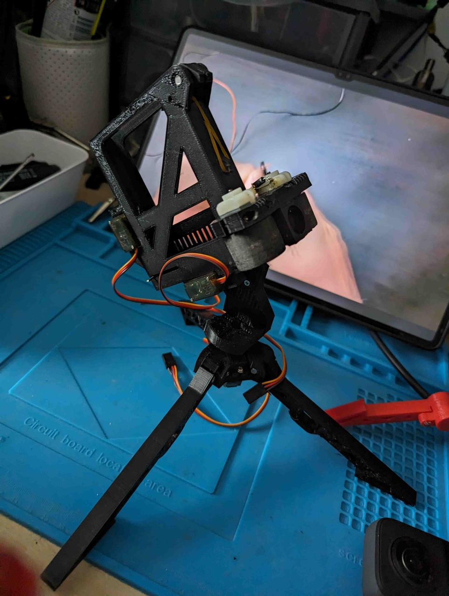
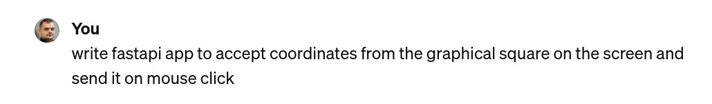
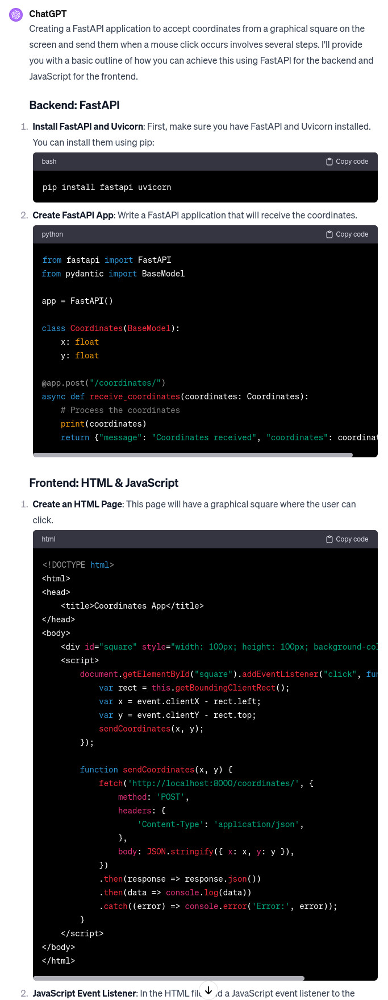
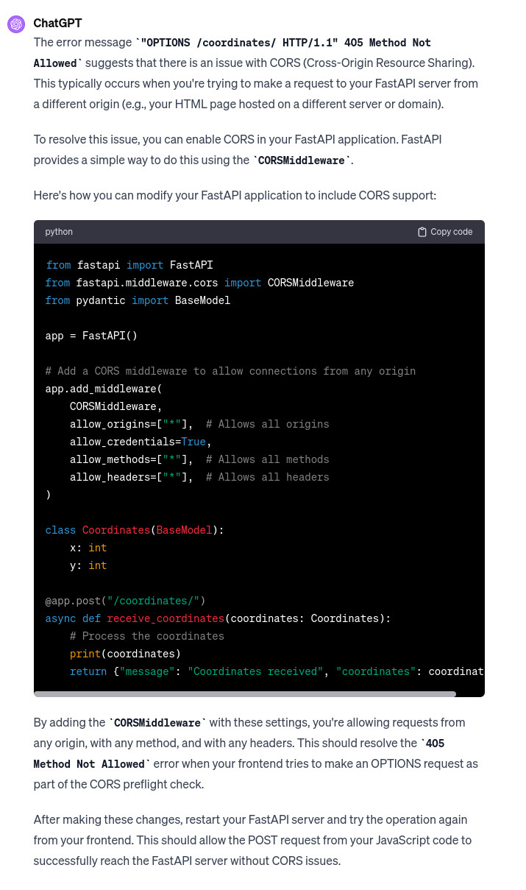
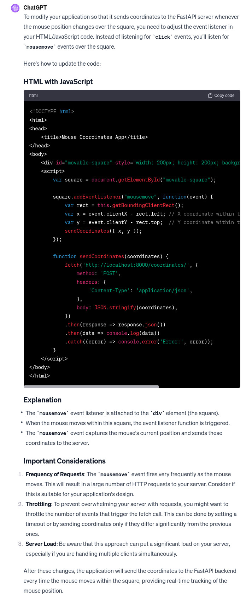

Building an Intelligent Nerf Turret with Jetson Nano: A Journey into DIY Robotics and AI
Introduction
Imagine transforming a simple toy into an intelligent machine that recognises and interacts with its environment. That's exactly what I set out to do with a Nerf turret. The journey began with a desire to create something fun and educational for my son and me, and it evolved into an exploration of open-source hardware, machine learning, and robotics.
The Beginning: Assembling the Turret
The project started with an open-source Nerf turret design
https://www.littlefrenchkev.com/bluetooth-nerf-turret
I printed all the parts using a 3D printer and got to work.
The assembly involved soldering components, integrating Arduino and servo motors for movement control, and programming the turret based on a project from the LittleFrenchKev website.
This initial phase was to explain basic electronics and programming to my son.
The fun
From Manual to Autonomous: The Leap into AI
After playing with the manually controlled turret, I realised the potential to make it autonomous and "intelligent."
The challenge was to enable the turret to recognise and target objects autonomously.
With a background in basic OpenCV and Tesseract from a decade ago, I decided to delve deeper into machine learning.
The Decision: Why Jetson Nano?
The offline Image recognitions options had to involve specialised hardware options were: Jetson Nano, Google Coral, and Intel CS.
I chose Jetson Nano for its balance of accessibility, power, and community support.
With its AI/ML Jetpack and 128-core GPU, Jetson Nano is the perfect fit for someone reentering the world of AI and machine learning.
The Upgrade: Image Recognition and Servo Control
Initially, I planned to use a Kinect camera for its depth-sensing capabilities.
However, I encountered compatibility issues with the Python version of the Jetson Nano Nvidia-customised ubuntu version.
So, I switched to a full HD Logitech camera. I asked ChatGPT for help in using the camera for person detection and received comprehensive guidance, including code snippets and suggestions to use Nvidia's pre-trained models for person detection.
https://chat.openai.com/share/1120521a-1042-4971-9e33-a852b85178f5
https://chat.openai.com/share/8ace3024-bcc9-44c1-a08a-7a5658a0e3e3
The implementation succeeded – the turret could now recognise a person using the Logitech camera.
Integrating AI with Mechanics
The next step was to translate the detected coordinates into servo movements.
I slightly modified the existing application to transform it into a web API that could accept coordinates.
This meant that the turret was not just a passive observer but could actively interact with its environment.
To add an interactive element, I created a simple HTML interface where the turret's movement followed the mouse cursor. A click would prompt the turret to "shoot."
WITH HELP OF CHATGPT!
After launching and accessing application of course I had some CORS errors
but if I didnt know whats CORS I could still just paste error to get answer from chatgpt -SCARY!
Later I wanted the turret to follow my mouse live. NOTE If we are without Architectual mind sending mouse coordinates changes through http API is crazy this would load server- but hapilly Chatgpt TELLS US ABOUT IT!!! just in case we have no infrastructure application workflow experience.)
What it didnt suggest is that for this specific usecase best would be to use websockets.
https://chat.openai.com/share/10b53b4b-d5df-41f7-9723-abde7da934e9
This feature made the turret a demonstration of AI and robotics and an engaging toy.
Conclusion: More Than Just a Toy
This project was a journey through various domains:
3D printing
electronics
programming
AI
robotics
It was a learning experience fueled by curiosity and the desire to create something unique. The Nerf turret, now equipped with AI capabilities, stands as a testament to the power of open-source projects and the accessibility of modern technology. What started as a fun project with my son became a gateway into the fascinating world of AI and robotics, demonstrating that anyone can step into the world of DIY AI projects with curiosity and the right tools.
Comments
Comments powered by Disqus